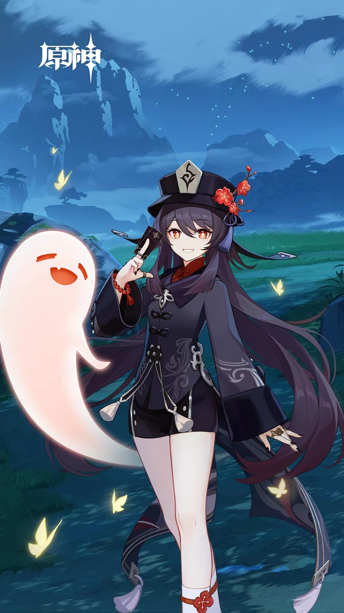
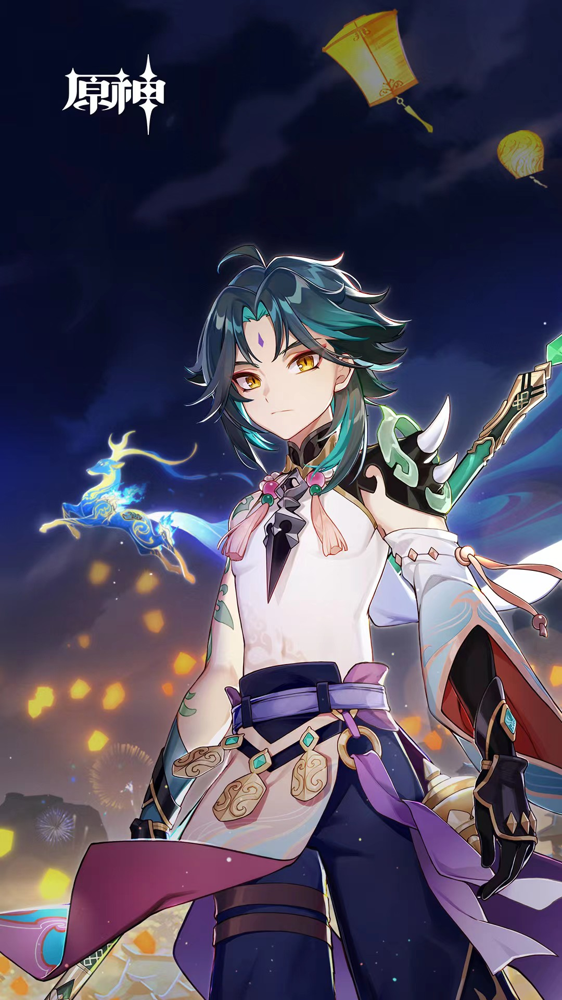
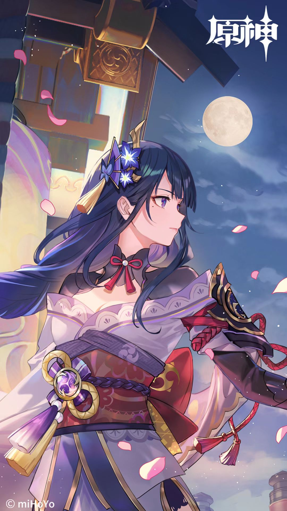
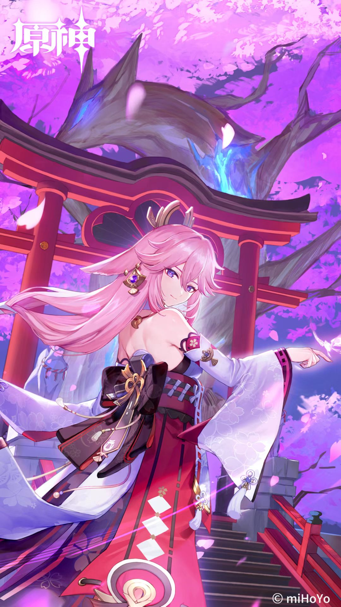

往生堂堂主
胡桃
既是「往生堂」堂主，也是璃月「著名」诗人，她总是飞快地出现又消失，犹如闪电与火花并行，甫一现身便点燃一切。
了解更多

三眼五显仙人
魈
在璃月港住民心中，居于「绝云间」的「三眼五显仙人」，皆有极高名望。每逢佳节吉日，人们都会上香祷告，祈望仙人保佑。
了解更多

雷电将军
雷电影
稻妻全土毋容置疑的统治者。担负着「御建鸣神主尊大御所」之威名，许稻妻民众以亘古不变之「永恒」。
了解更多

鸣神大社宫司
八重神子
无人知晓真实，就像无人能轻易从秘林中找到一只与过客擦肩的仙狐。可若是狐狸注视着人…狐狸又将往何处去？
了解更多
雷电将军
雷电影
稻妻全土毋容置疑的统治者。担负着「御建鸣神主尊大御所」之威名，许稻妻民众以亘古不变之「永恒」。
了解更多